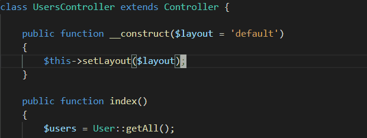
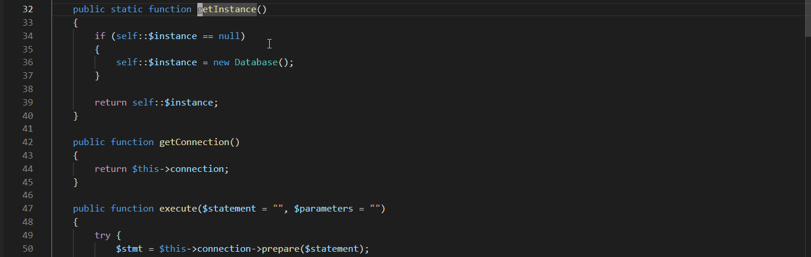

Introduction
Dans ce rapport technique, je vais vous faire un survol des technologies que j'ai utilisé et approfondis mon expertise avec durant mon stage chez l'entreprise Mediavore. Certains sujets seront plus détaillés que d'autres.
EDI (Environnement de développement intégré)
Pour mon environnement de développement intégré, j'ai choisi Visual Studio Code. Chez Mediavore, la majorité des développeurs utilisent Apache NetBeans. Par contre, moi je n'aimais pas le style de NetBeans et je trouvais l'interface d'utilisateur trop compliquer. J'ai opté pour Visual Studio Code parce que j'aimais vraiment le style de l'application et la simplicité puis je voulais apprendre davantage sur ce programme.
Les modules d'extensions
Visual Studio Code n'est pas un EDI pour un langage de programmation spécifique. Pour l'utiliser, il faut trouver les modules d'extensions utiles pour ton contexte. Voici les modules d'extensions que j'ai découverts et utilisés dans mon contexte. Vous pouvez cliquer sur les titres pour vous trouver à la page web du module d'extension.
PHP Intelephense
Ce module d'extension offre plusieurs outils utiles pour PHP. Ça nous offre la complétion de code, un outil pour aller a la définition des symboles, du formatage de code selon le PSR-12 et beaucoup d'autres outils intéressants. Voici un exemple visuel de l'utilisation de PHP Intellephense.
| Go To Definition |
|  |
| Go To Reference |
|  |
SFTP
Vim
Languages de programmation
Donec sit amet pretium diam, eu placerat ligula. Nam molestie efficitur condimentum. Suspendisse nec malesuada ligula, et ultricies leo. Proin sodales est sed nisl lacinia, id tincidunt lorem suscipit. Morbi et neque diam. Donec augue turpis, tempus a ex ac, dictum semper elit. Quisque nec eros interdum, ullamcorper est quis, euismod enim. Etiam ullamcorper eget libero rhoncus sollicitudin. Integer at nibh sagittis dui blandit dictum. Phasellus mattis odio ac finibus blandit. Fusce non dui vitae dui tempor condimentum. Vivamus maximus neque vitae felis ornare, vel posuere nibh eleifend. Donec finibus nunc quis nibh convallis tincidunt ut id tellus. Nunc ornare convallis feugiat.
CodeIgniter 3
| Avantages | Inconvenients |
| Test | Test |
Donec sit amet pretium diam, eu placerat ligula. Nam molestie efficitur condimentum. Suspendisse nec malesuada ligula, et ultricies leo. Proin sodales est sed nisl lacinia, id tincidunt lorem suscipit. Morbi et neque diam. Donec augue turpis, tempus a ex ac, dictum semper elit. Quisque nec eros interdum, ullamcorper est quis, euismod enim. Etiam ullamcorper eget libero rhoncus sollicitudin. Integer at nibh sagittis dui blandit dictum. Phasellus mattis odio ac finibus blandit. Fusce non dui vitae dui tempor condimentum. Vivamus maximus neque vitae felis ornare, vel posuere nibh eleifend. Donec finibus nunc quis nibh convallis tincidunt ut id tellus. Nunc ornare convallis feugiat.
Patron de conception
Donec sit amet pretium diam, eu placerat ligula. Nam molestie efficitur condimentum. Suspendisse nec malesuada ligula, et ultricies leo. Proin sodales est sed nisl lacinia, id tincidunt lorem suscipit. Morbi et neque diam. Donec augue turpis, tempus a ex ac, dictum semper elit. Quisque nec eros interdum, ullamcorper est quis, euismod enim. Etiam ullamcorper eget libero rhoncus sollicitudin. Integer at nibh sagittis dui blandit dictum. Phasellus mattis odio ac finibus blandit. Fusce non dui vitae dui tempor condimentum. Vivamus maximus neque vitae felis ornare, vel posuere nibh eleifend. Donec finibus nunc quis nibh convallis tincidunt ut id tellus. Nunc ornare convallis feugiat.